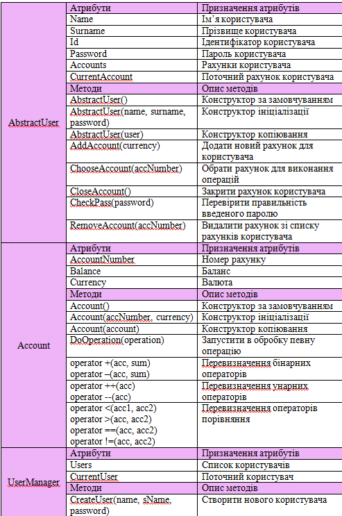
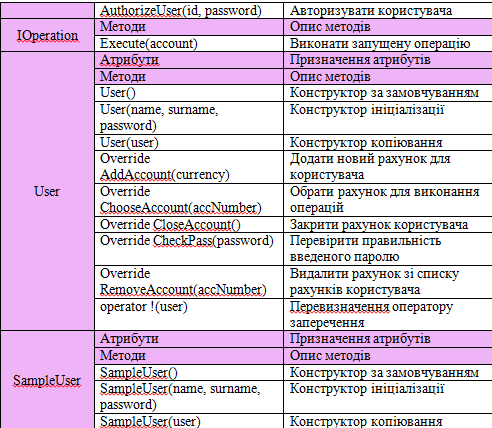
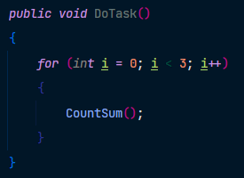

Тема: ПОТОКИ
Мета: придбати практичні навички роботи з потоками.
- Постановка задачі:
- 1. В окремому проекті виконати завдання пункту №3
- 2. Протестувати програму
- 3. Зробити висновки
UML-діаграма класів проекту

Таблиця класів
Продовження
Код виконання 3 циклів в одному потоці
Код виконання 3 циклів в одному потоці
Код виконання 3 циклів в одному потоці
Результат виконання 3 циклів в одному потоці

Код виконання 3 циклів у трьох потоках
Код виконання 3 циклів у трьох потоках
Результат виконання 3 циклів у трьох потоках
Код читання з файлу в некотрольованих потоках
Код запису з файлу в некотрольованих потоках
Код читання і запису з файлу в некотрольованих потоках

Результат запису і читання з файлу в неконтрольованих потоках
Код запису і читання з файлів із синхронизованими потоками
Код запису і читання з файлів із синхронизованими потоками
Результат запису і читання з файлів із синхронизованими потоками
Код запису і читання з файлу із використанням м'ютексів
Код запису і читання з файлу із використанням м'ютексів
Результат запису і читання з файлу із використанням м'ютексів
Код для одночасного читання і запису двома потоками (семафори)
Код для одночасного читання і запису двома потоками (семафори)
Результат одночасного читання і запису двома потоками (семафори)
Папка з проектом
Завантажити папку з проектомЗапуск exe-файлу
Завантажити програмуВисновки
Виконуючи дану лабораторну роботу, ми придбали практичні навички роботи з потоками. Нашою командою були написані усі поставлені задачі. Крім цього, під час виконання ми виокристовували м'ютекси та семафори для синхронізації потоків.
Результат обробки виключення при реєстрації користувача
Результат обробки виключення
Результат роботи програми без обробки виключення